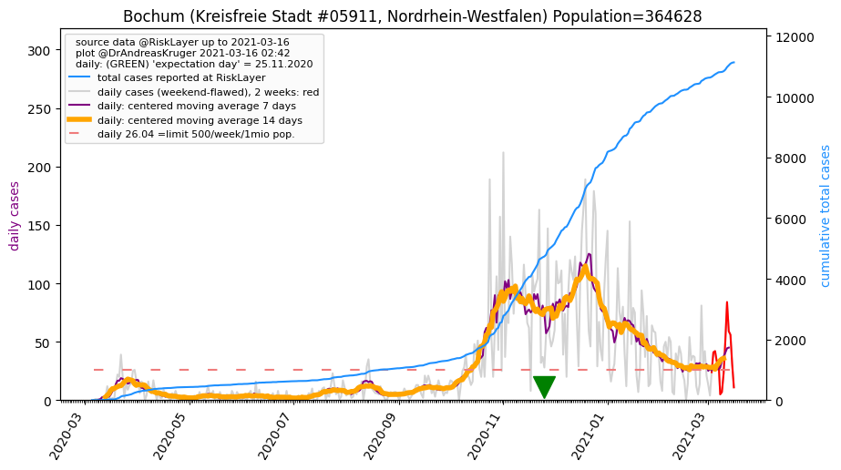
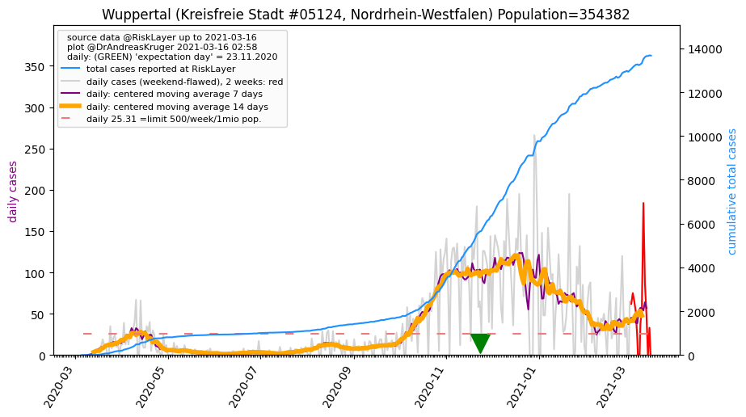
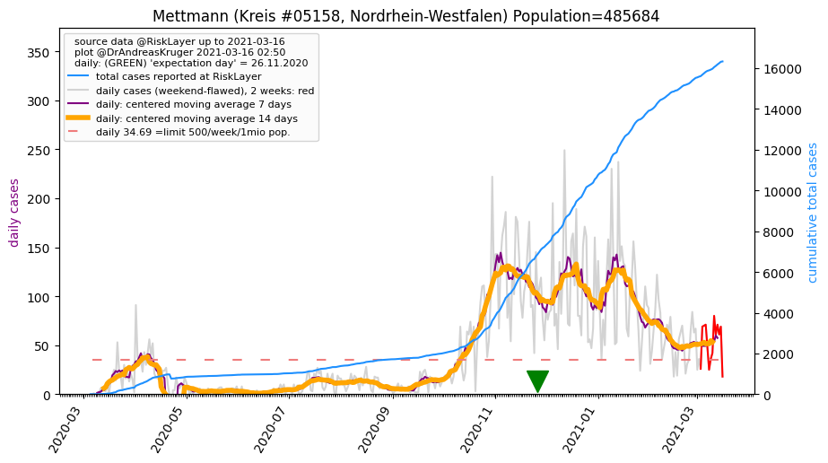
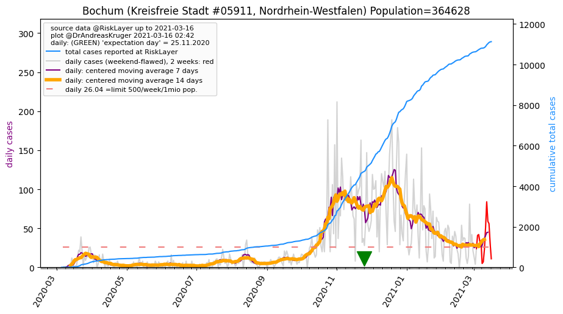
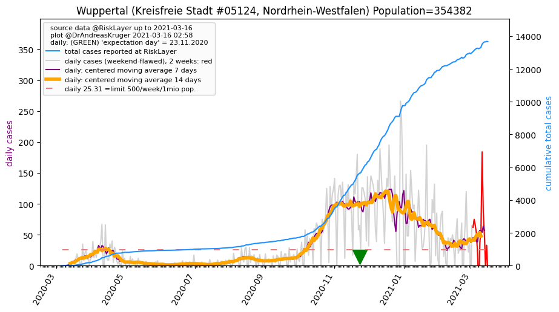
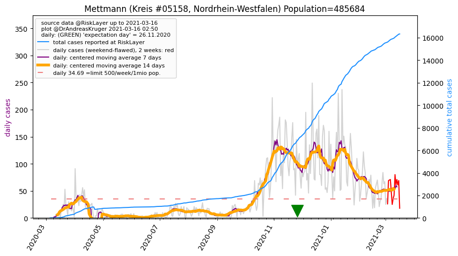

")
")

")
")
")
")
")
")
")
")

")
")
")
")
")

")
")
| Dortmund_KS (0.0 km) |
Unna_KR (13.2 km) |
Bochum_KS (18.1 km)  |
Herne_KS (18.6 km) |
| Hagen_KS (18.8 km) |
Ennepe-Ruhr-Kreis_KR (21.6 km) |
Recklinghausen_KR (28.0 km) |
Gelsenkirchen_KS (28.3 km) |
| Hamm_KS (29.3 km) |
Märkischer Kreis_KR (32.7 km) |
Essen_KS (33.1 km) |
Wuppertal_KS (36.4 km)  |
| Bottrop_KS (39.0 km) |
Coesfeld_KR (39.7 km) |
Remscheid_KS (41.0 km) |
Mülheim an der Ruhr_KS (43.0 km) |
| Oberhausen_KS (43.6 km) |
Mettmann_KR (45.5 km)  |
Solingen_KS (48.6 km) |
Münster_KS (49.8 km) |
All plots are regenerated with new data every night. Beware this temporary hotspot is an experimental page - it might get removed, so please do not link to it. Instead link to project http://tiny.cc/cov19de.